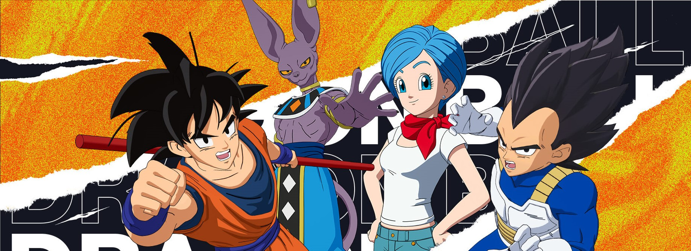
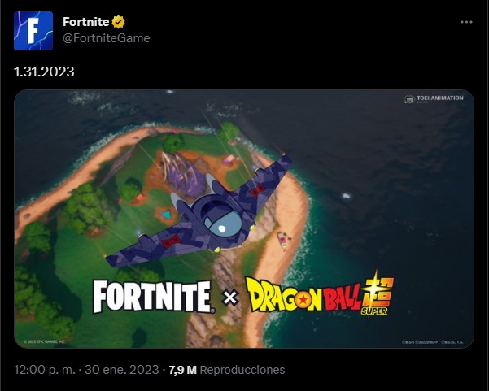

Fortnite y Dragon Ball tendrán nueva colaboración; ya hay fecha y primer teaser
La franquicia de Akira Toriyama volverá al Battle Royale esta semana
Fortnite tuvo una increíble colaboración con Dragon Ball Super en agosto del año pasado. La comunidad del Battle Royale quedó muy satisfecha con este crossover, pues pudo conseguir skins de sus personajes favoritos y disfrutar actividades especiales.
Hay buenas noticias para todos ellos, pues las franquicias volverán a unirse en una nueva colaboración. Epic Games lo confirmó esta mañana al publicar el primer teaser del crossover que, por fortuna, ya tiene una fecha confirmada y está muy cerca.
¿Cuando sera la colaboracion?
Epic Games no ha revelado todos los detalles del siguiente crossover con la franquicia japonesa, pero confirmó que está muy cerca. Los fans sólo deben esperar unas cuantas horas, pues la colaboración iniciará mañana 31 de enero.
Los seguidores de Goku y compañía están muy emocionados, pues esperan que Epic ofrezca contenido especial basado en Dragon Ball Super: Super Hero, la más reciente película de la saga. Por ahora, la compañía únicamente compartió una imagen donde vemos una nave de la Patrulla Roja, lo que parece confirmar la teoría de los fans.
Anteriormente, los jugadores pudieron obtener skins de Goku, Vegeta, Bills y Bulma, por lo que se espera que Gohan esté entre los personajes principales de la nueva colaboración. Con suerte, Epic Games también organizará un nuevo evento similar al anterior Torneo de la fuerza.
Mañana mismo conoceremos todos los detalles de este crossover, así que te los compartiremos en cuento estén disponibles. Abajo puedes ver la imagen que te comentamos.
